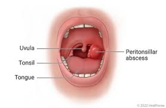
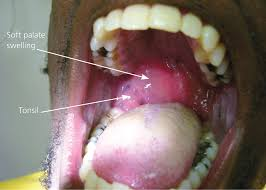

A peritonsillar abscess is a pus-filled pocket that forms in the tissue next to the tonsil and can cause severe pain and difficulty swallowing. It's a complication of tonsillitis and is often caused by the same bacteria that cause strep throat.
Treatment for a peritonsillar abscess usually involves antibiotics and may also include draining the pus. This can be done by lancing the abscess to release fluids, or with a needle. If you are unable to eat or drink, you may need to receive fluids intravenously. Peritonsillar abscesses are most common in adults 20 to 40 years of age and most often occur during November to December and April to May.

